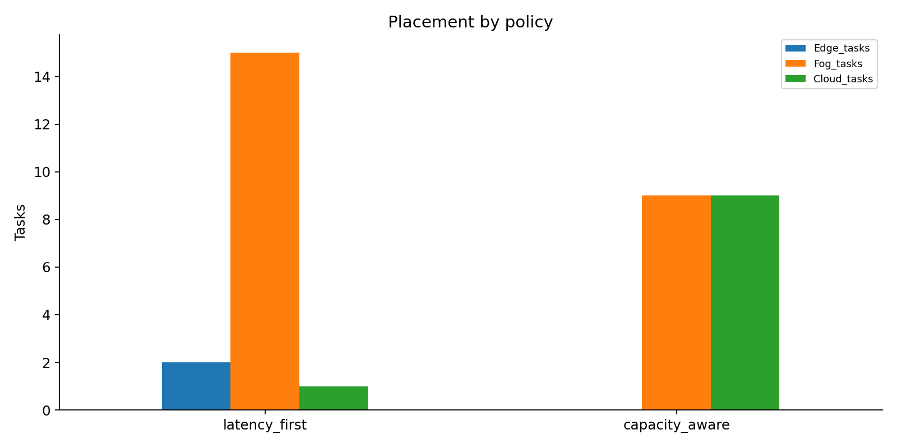
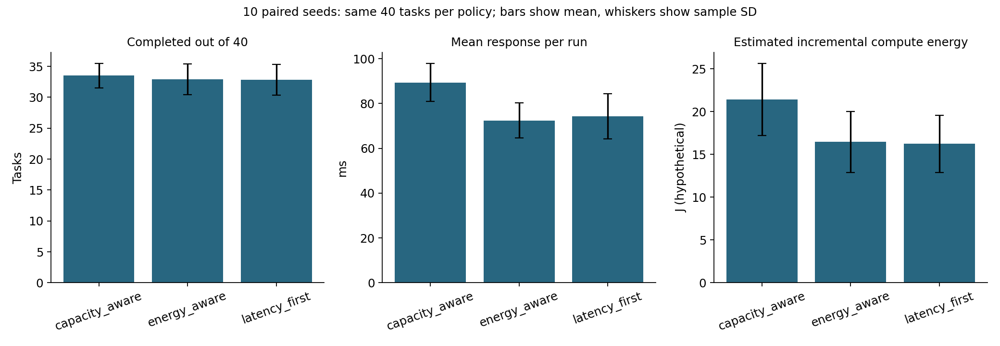

Compute Playground
Subject: CDEF Computing
A little computer world where jobs find a place to work.
Welcome! Imagine three pretend workshops. You give them jobs. Our Python program decides which workshop has enough room and can finish quickly enough. Then it keeps track of what is busy and what is free.
The computers are imaginary. The decisions and changing records are real Python logic. This project does not start a real server VM or reserve your laptop's CPU/RAM.
Open the interactive book for search, expandable chapters, copy buttons, a working allocation toy, questions with answers, and a progress checklist. Download/extract the whole project first, then double-click README.html. It works offline, needs no Python, and explains the project; it does not control the simulator. This Markdown book works in a text editor or repository viewer too.
1. The story
Imagine you have a drawing to finish. You can take it to one of three workshops:
| Workshop |
Computer name |
Helpers: CPU units |
Table space: RAM |
Travel delay |
Helper speed |
| Next door |
Edge |
4 |
4 GB |
5 ms |
1 |
| Around town |
Fog |
12 |
16 GB |
25 ms |
2 |
| Far away |
Cloud |
32 |
64 GB |
100 ms |
4 |
A nearby workshop is quick to reach. A faraway workshop has more helpers and faster work. Nearby does not always mean the whole job finishes fastest!
These numbers are our chosen pretend-world settings, not measurements of real computers. See the node settings. The application actually starts from DEFAULT_NODES in engine.py; the JSON is an exported reference copy, not a live settings file.
When a job takes 2 helpers from Edge, 2 helpers remain free. Another job needing 3 cannot fit there right now. When the first job finishes or stops, its helpers become free again. Nothing gets randomly printed to make that happen: the engine changes and checks its saved state.
Try a tiny question: Edge has 4 CPU units. A job takes 2. What remains?
**2 CPU units.** If that VM stops, the 2 units return. Stopping it again gives back nothing extra.
Back to the adventure menu
2. Our tiny dictionary
| Word |
Small-child explanation |
Exact meaning here |
| Task |
A job card |
ID, owner, CPU, RAM, sensitivity, work and arrival time |
| Node |
A workshop |
One simulated Edge, Fog or Cloud computer |
| CPU |
Helpers doing work |
Abstract processing capacity reserved by a task |
| RAM |
Space on a table |
Reserved memory capacity, measured in GB |
| Latency |
Waiting for the trip |
Fixed network delay included in response time |
| Work |
How big the job is |
CPU-ms of work at speed 1 |
| VM |
A booking ticket |
A Python record reserving CPU/RAM on a node |
| Policy |
A choosing rule |
Algorithm selecting an eligible node |
| Tenant |
The name on your toy box |
Demo owner tenant_a or tenant_b |
| Utilization |
How much is busy |
Used capacity divided by total capacity |
| QoS |
Did we meet our promise? |
Predicted response within the sensitivity budget |
| CSV |
A sheet of rows and columns |
Results file you can open in a spreadsheet |
| Deterministic |
Same game, same ending |
Identical inputs and starting state give identical outputs |
3. Open the playground
You need Python 3.10 or newer and an internet connection for installing packages the first time. After installation, the simulator runs locally.
- Extract the submission ZIP. Open the
Compute_Playground folder inside it.
- Open a terminal inside that folder. You should be able to see
app.py and requirements.txt.
- On Windows, run each line in order:
python -m venv .venv
.venv\Scripts\python.exe -m pip install -r requirements.txt
.venv\Scripts\python.exe -m streamlit run app.py
What did those lines do?
venv makes a little private toolbox called .venv.pip install fills the toolbox with the packages listed in requirements.txt.streamlit run opens the application built by app.py.
Open the local address printed by Streamlit, usually http://localhost:8501. Keep that terminal open. Press Ctrl+C in it to stop the application. On a later visit, only the last command is needed.
macOS / Linux commands
python3 -m venv .venv
.venv/bin/python -m pip install -r requirements.txt
.venv/bin/python -m streamlit run app.py
Use `.venv/bin/python` in place of `.venv\Scripts\python.exe` in the Windows commands elsewhere in this book.
No paid cloud, Docker, database, hypervisor, API key or real VM is needed. The application lives in one Python process. Closing/restarting its session can lose live simulation state; exported CSV files stay on disk.
4. Your first job
Yes, you can add your own tasks. The first app tab is Submit task. Enter any unique task name and your own CPU, RAM, sensitivity and work values. Each submission belongs to the selected tenant. You can add multiple tasks; the engine decides whether to allocate, queue or reject each one based on the current state.
The app now includes a Start here walkthrough, question-mark help beside the inputs, friendly rule names and a submission receipt showing the selected server and response calculation. The task table shows the most useful columns first, with full technical fields in an expander. Generated-workload settings and Edge server settings are expandable sidebar sections. Pending rule/server changes show a warning until reset.
Start with a fresh simulation using Reset with these settings. Keep the first policy, latency_first, selected and use tenant_a.
- Open Submit task.
- Enter ID
my-first-job, CPU 2, RAM 1, sensitivity high, work 80.
- Press Place task.
- Edge should be selected. It uses 2 of 4 CPU and 1 of 4 GB.
- Its work time is
80 / (2 × 1) = 40 ms. Its predicted response is 40 + 5 = 45 ms.
- Look at Tasks and VMs. Find your job and its booking ticket,
vm-my-first-job.
- Press Advance 50 ms. The task becomes
completed and its resources return.
To try stopping instead: reset, submit the same job again, select its running VM under Tasks and VMs, and press Stop selected VM before advancing time. Its task becomes cancelled and the VM becomes stopped.
Why do I see only nine tasks after loading eighteen?
The sample contains nine tasks belonging to each of two tenants. The task and VM tables show only the current tenant's records. Node resource bars show shared totals. The sample loader also advances to 100 ms, so some jobs have already finished by the time loading ends.
5. The map of the house
Each folder is a room. Each file has a job. The links below open the real files.
Compute_Playground/
README.md This book in Markdown
README.html The interactive offline edition
app.py Buttons, forms, tables and resource bars
requirements.txt Packages needed to run the simulator
requirements-docs.txt Extra package for rebuilding the PDF
build_report.py Makes the report and architecture picture
simulator/
__init__.py Marks this as a Python package
engine.py Tasks, three policies, queue, clock, VMs, energy, ownership
workloads.py Repeatable workload generator using a private random seed
config/
nodes.json Exported node-settings reference
workloads/
baseline.json Exported 18-task reference
overload.json Exported 20-task reference
experiments/
run_experiments.py Original scenarios plus the extension experiments
extended_experiments.py Queue comparison and ten paired seeds across three policies
tests/
test_engine.py Nine simulation correctness tests
test_ui.py Seven interface behaviour tests
test_extensions.py Nine queue, deadline, energy and explorer checks
results/
summary.csv Original five performance scenarios
seeded_runs.csv Thirty paired seed/policy run records
seeded_summary.csv Mean and sample SD across ten seeds
queue_comparison.csv Same 14 tasks with queue off and on
seed7_<policy>_*.csv Detailed seeded task, timeline and utilization traces
queue_<on/off>_*.csv Detailed queue comparison traces
<scenario>_tasks.csv Decisions and predicted response for every task
<scenario>_vms.csv VM allocation and status records
<scenario>_utilization.csv Resource snapshots at simulation events
charts/
placements.png Where jobs went
qos.png Predicted mean and p95 response
utilization.png Peak CPU/RAM use
seeded_comparison.png Acceptance, response and hypothetical energy across seeds
evidence/
experiments.json Original setup, expectation, outcome and evidence pointers
extensions.json Seeded/queue setup, assumptions and actual outcomes
*_decisions.json Node evaluations saved for queue and seed-7 traces
security.json Denied view/stop attempts
lifecycle.json Resource release after stopping twice
test_output.txt Recorded automated test output
screenshots/ Pictures of the working interface
docs/
report.pdf Eight-page formal report
presentation.pptx Seven-slide presentation
architecture.png System diagram
demo_script.md A five-minute demonstration route
viva.md Questions and talking points
team_details.md Your actual team information goes here
The front room: what you see
app.py draws the Streamlit interface. The sidebar chooses a demo identity, policy and Edge settings. Tabs show tasks/VMs, custom submission, saved experiments and protected-record access. It keeps an Engine in Streamlit session state, so ordinary button clicks work on the same simulation.
The engine room: what makes it work
simulator/engine.py owns the rules and state. Task is a job card; Engine is the organiser. This file handles capacity checks, policy scores, resource reservations, VM creation/stopping, completion events and tenant ownership checks. It works without Streamlit too.
The scientist's room
experiments/run_experiments.py defines workload() and the overload workload, starts fresh engines, runs comparisons, writes CSV/JSON, and draws charts using matplotlib. Edit that Python file to change generated experimental workloads. The JSON workload files are exported reference copies; the runner does not read edits to them back in.
The checking room
test_engine.py checks accounting bounds, completion, fallback/rejection, security, repeated stopping, fractional resources, invalid input, repeatability and policy differences across nine tests. test_ui.py checks sample loading/security and custom-task/sample-ID collisions across seven tests, including the custom-submission receipt. The extension suite adds nine checks for waiting, deadlines, energy, reproducibility and protected explorer data.
The scoreboard room
summary.csv is the quick comparison. Scenario task files explain each decision. VM files show booking tickets. Utilization files preserve busy moments even though the final system may be idle. The charts turn those recorded numbers into pictures.
The teacher's folder
report.pdf explains the model and findings. presentation.pptx is the seven-slide summary. architecture.png shows how the parts connect. demo_script.md, viva.md and team_details.md help you prepare your own explanation.
Back to the adventure menu
6. Follow one job
You fill in a job card in app.py
-> Engine.submit(Task(...)) in simulator/engine.py
-> validate the card and move to its arrival time
-> check CPU, RAM and the response promise on each node
-> choose an eligible node using the selected policy
-> save a task decision and a VM booking
-> update used CPU/RAM and save resource snapshots
-> app.py displays the returned state
-> Engine.advance(...) finishes due jobs and releases reservations
| Engine function |
What it does |
submit(task) |
Validates, advances time, selects/rejects, reserves and records |
snapshot() |
Returns a copy of shared node resource state |
records(tenant) |
Returns only that tenant's task records |
vms(tenant) |
Returns only that tenant's VM records |
get_task(tenant, id) |
Returns one task after checking its owner |
stop(tenant, vm_id) |
Checks owner and releases a running VM exactly once |
advance(to_ms) |
Moves to an absolute virtual time and finishes due work |
run_until_complete() |
Advances to the latest running task's compute finish |
_release(...) |
Internal helper that changes status and restores capacity |
The underscore in _release says “engine helper”; ordinary application code uses the public methods instead.
7. How the chooser thinks
First, all three policies ask three questions: enough free CPU? enough free RAM? predicted response within the promise? A task's sensitivity chooses its promise: high = 60 ms, medium = 180 ms, low = 600 ms. High means the task cares a lot about delay, not that it may wait longer.
Lowest latency first: among eligible nodes, choose the smallest network delay. It often picks a nearby node. It does not directly minimize the whole response time.
Capacity aware: among eligible nodes, balance response time against how full that node would become. Low-sensitivity tasks care more about leaving headroom. The exact rule in engine.py is:
processing_ms = work / (task_cpu × node_speed)
response_ms = wait_ms + processing_ms + network_delay_ms
U = max(projected_used_CPU / total_CPU, projected_used_RAM / total_RAM)
score = w × (response_ms / budget_ms) + (1 − w) × U
w = 0.8 for high, 0.5 for medium, 0.2 for low
Pick the lowest score. Node name breaks ties, making the result repeatable. If no node passes, reject the task and explain each failed capacity/QoS check. With the default queue setting off, there is no waiting queue. With it on, temporarily blocked but otherwise feasible work can wait; chapter 13 explains the rules.
Does “capacity aware” always win?
No. In our baseline, it leaves more spare Fog capacity but increases predicted mean response. A good report explains the trade-off rather than hiding the slower response.
8. Time and ownership
A pretend clock with real consequences
No actual sleeping is needed. Moving the virtual clock makes the engine process due completions. Resources stay reserved for processing time. Network delay adds to predicted response, but does not keep CPU/RAM reserved. completed means compute completion. Events at the same timestamp release finished work before new arrivals are placed.
advance(50) means “go to time 50”, not “add 50”. The UI's Advance 50 ms button adds 50 to the current clock for you.
A VM has running, completed or stopped status. Tasks have queued, running, completed, rejected, expired or cancelled status. Rejected tasks never get a VM. Stopping an active VM cancels its task and restores capacity. Repeating the stop is a no-op.
Your toy box has your name on it
Select tenant_a, load samples, then switch to tenant_b. Under Security demonstration, request T01, which belongs to tenant A. Try View task, then Stop VM. Both must say Access denied. The engine checks ownership; the UI does more than merely hide rows.
The identity selector is intentionally a classroom impersonation tool. It is not a real login system. Published experiment files contain synthetic records from both tenants so the class can inspect them. Shared node utilization is public. No passwords or sensitive data are used.
9. Be a scientist
A fair experiment is like racing toy cars from the same starting line. Each performance scenario uses a fresh engine.
From the extracted project folder, after installing packages:
.venv\Scripts\python.exe -m unittest discover -s tests -v
.venv\Scripts\python.exe -m experiments.run_experiments
The first command runs 25 tests. The second recreates the original and extended experiments. It overwrites generated files in results/, some JSON evidence in evidence/, and the exported configuration/workloads. It does not refresh screenshots or test_output.txt automatically.
Read experiments.json for setup, expected outcome, actual outcome and evidence pointers. There are five performance rows because policy comparison needs two runs, plus security and lifecycle evidence.
Want to change the model? Edit DEFAULT_NODES, BUDGETS or scoring weights in engine.py. For a quick UI experiment, change the sidebar settings and reset. Sidebar changes affect Edge only. Regenerate experiments and then rebuild the report if model changes make saved results stale.
How do I rebuild the formal report?
.venv\Scripts\python.exe -m pip install -r requirements-docs.txt
.venv\Scripts\python.exe build_report.py
[build_report.py](build_report.py) reads saved results and makes `docs/report.pdf` and `docs/architecture.png`. It does not regenerate experiments or the PowerPoint. The PowerPoint is an editable submission artifact; after changing experimental results, update its numbers yourself too.
10. Read the scoreboard
These are the included reference results, from summary.csv:
| Run |
Completed / submitted |
Rejected |
Mean predicted response |
p95 |
| Lowest latency first |
18 / 18 |
0 |
68.06 ms |
107.25 ms |
| Capacity aware |
18 / 18 |
0 |
89.17 ms |
125.00 ms |
| Overload |
12 / 20 |
8 |
110.83 ms |
125.00 ms |
| Bigger Edge |
18 / 18 |
0 |
70.56 ms |
105.00 ms |
| Slower Edge trip |
18 / 18 |
0 |
76.39 ms |
170.00 ms |
Mean is the average. p95 is a value near the slower end of the completed tasks' predicted response times, calculated using linear interpolation. Peak utilization is the busiest recorded moment, not the empty moment after all work ends. Each node's peak can happen at a different time.
Capacity-aware reduces peak Fog CPU from 100% to 41.67%, but response gets slower. A bigger Edge handles more jobs but can also raise mean response because its processing speed is lower. In the latency-change scenario, placement counts stay the same while response worsens. Report what actually happened, even when a count does not change.
All completed predictions meet their budgets because admission checks reject unsuitable nodes first. Always read compliance beside rejections: rejecting difficult jobs can make compliance look perfect. Cancelled tasks have no successful measured response; their stored response is a prediction made at admission. The summary uses completed tasks only.

View response chart · View utilization chart
11. When something goes wrong
| Problem |
What to try |
python is not recognised |
Check your Python installation; on Windows try py instead of python when making the virtual environment |
No module named streamlit |
Install requirements using the same .venv Python used to run the app |
app.py cannot be found |
Open the terminal inside the extracted project folder |
| Nothing changes after editing sidebar settings |
Press Reset with these settings |
| Duplicate task ID |
Use a new ID or reset; sample IDs are T01 to T18 |
| Sample IDs already exist |
Reset before loading the sample workload |
| Clock cannot go backward |
Use a future absolute time in engine code |
| My task is rejected despite spare capacity |
Check the reason: CPU, RAM and response budget must all pass |
| I cannot see another tenant's task |
That protection is expected; switch identities for your own records |
| Final resource use is zero |
Tasks finished; inspect utilization CSVs for peak usage |
| My JSON edits do nothing |
These are exported reference files; edit the Python definitions described in chapter 5 |
| The old app still appears |
Stop the old Streamlit process with Ctrl+C, then launch the updated project |
The model intentionally omits real VMs, network traffic, migrations, failures, contention slowdown and production authentication. Waiting queues and deadlines are now optional simulated features. It simulates resource reservations and uses a fixed performance formula.
12. Show and tell
Use demo_script.md for the five-minute route. Use viva.md to practise explaining the whole system.
Before submission:
You understand the project when you can tell this story: a job arrives, the chooser checks its needs, a workshop reserves space, a booking ticket tracks the work, the clock finishes it, and the space becomes free again.
Return to the start
13. The bigger playground
Watch the story happen
Press Schedule seeded workload, then Play timeline. The program delivers future job cards at their saved arrival times and advances 20 virtual ms each second. This is a visual playback speed, not a real hardware clock. Pause timeline, Advance 50 ms and Run until complete give manual control too. Reset clears scheduled work. Use Timeline to see only your tenant's jobs: grey hatch means waiting, filled blue means elapsed processing and outlined blue means remaining planned processing. The event table records arrivals, allocation, completion, rejection, expiry and cancellation. Export it with Export my timeline.
The waiting bench
Imagine all helpers are busy. Instead of immediately sending every new job home, switch on Queue temporarily blocked tasks, then reset. A job waits only if some node could handle its CPU/RAM and response budget when empty. An impossibly large or intrinsically too-slow job is rejected straight away.
The deadline is arrival time plus its sensitivity budget. Waiting counts: response = wait + processing + network. At resource-release events, the queue tries earliest deadlines first, breaking ties by arrival then ID. All completions at a timestamp release capacity before queued jobs are evaluated. Other feasible jobs can pass a blocked job, so the queue does not intentionally idle a suitable node. This is a deterministic heuristic, not a promise of fair or optimal scheduling. A queued job gets no VM and reserves nothing until admission. It expires at its deadline if it has not started. You can also cancel your own queued job from the Timeline tab.
Press Load queue demonstration for a fresh queue-enabled world. Twelve low-sensitivity jobs fill the nodes. wait-success waits, starts on Cloud at 25 ms, and completes. urgent-expiry cannot meet its 60 ms response promise when suitable resources free up, so it expires. This button explicitly resets the world and enables its queue; the active queue status above the resource bars is authoritative. Sidebar settings apply again when you reset.
Does the queue mean a task can start at its deadline?
No. The response budget includes its waiting, processing and network delay. Merely finding a free CPU just before the deadline is insufficient. Queued tasks still pass the same end-to-end QoS test before starting.
Ask the chooser why
Open Decision explorer and select one of your tasks. Every evaluation attempt preserves a separate node table: available CPU/RAM, capacity and QoS checks, waiting, projected utilization, score, hypothetical energy and the selected node. Earlier snapshots do not change when the node later gets busy. decisions(tenant, task_id) checks ownership, just like task lookup. The explorer and timeline never expose another tenant's task records.
Different stories, reproducible endings
A seed is like the page number of a shuffled storybook: seed 7 gives the same ordered cards every time. simulator/workloads.py uses its own random.Random(seed) so unrelated random code cannot disturb it. Choose seed and task count in the sidebar, then schedule. Use another seed or reset before reusing its IDs.
The experiment runner compares seeds 0–9, each with 40 identical tasks for each of three policies, always using fresh engines with queues on. seeded_runs.csv preserves all thirty runs. seeded_summary.csv reports per-run means and sample standard deviations across seeds. The plotted whiskers are sample SD, not confidence intervals. Also compare the same 14-task demonstration with queue on and off in queue_comparison.csv.
A pretend electricity meter
Each node has an illustrative incremental power coefficient: Edge 2, Fog 6, Cloud 18 watts per reserved CPU unit. These are invented teaching parameters, not measured hardware data. Estimated compute energy is:
energy_j = reserved_CPU × watts_per_CPU × elapsed_processing_ms / 1000
Waiting uses zero incremental compute energy in this deliberately limited model. Stopping a VM charges only the processing time already consumed. Idle power, network energy, RAM, cooling and boot costs are omitted. A task also stores its full predicted processing energy at allocation, separately from consumed energy.
The third policy, energy_aware, filters the same CPU/RAM/QoS constraints, then minimizes:
energy_scale = largest full-task compute-energy estimate across the nodes
score = 0.5 × (response / budget) + 0.5 × (task_energy / energy_scale)
This balances the hypothetical energy estimate against response; it does not minimize total system electricity or guarantee the lowest measured joules. Report energy beside completed counts: doing less work can use fewer joules.
What actually happened?
Across the ten paired seeds, average completed tasks out of 40 were 32.8 latency-first, 33.5 capacity-aware, and 32.9 energy-aware. Average per-run response was 74.30, 89.40, and 72.48 ms, respectively. Average modeled compute energy was 16.232, 21.424, and 16.456 J. Energy-aware did not beat latency-first on total modeled energy, and their completed counts also differ. That is a result to explain, not hide.
In the 14-task queue comparison, queue-off completed 12 and rejected 2. Queue-on completed 13, rejected 0, and expired 1. More completed work increased modeled energy from 18.80 to 19.25 J. See extension evidence for setup, expectation, actual outcomes and assumptions.

14. Could we plug in real computers?
Not directly. Today a VM is a Python reservation record. Giving the application a real server address does not make that record launch real work. Think of the simulator as a toy workshop organiser: it knows how to choose a workshop, but it has no delivery truck or real tools attached.
A future execution adapter would be the delivery truck. The following interface is a proposed design, not working code in this submission:
| Adapter responsibility |
What a real implementation must do |
| Discover resources |
Obtain current node capacity, availability and health |
| Launch work |
Map a supported task to a real process, container, VM or managed job |
| Track identity |
Authenticate users and apply real resource permissions and quotas |
| Observe execution |
Read actual job status, elapsed time, CPU/RAM and failures |
| Stop work |
Stop the real job and confirm that its resources are released |
| Reconcile state |
Recover after crashes and prevent simulated reservations drifting from reality |
| Handle credentials |
Use an appropriate secret store instead of putting secrets in project files |
The placement rules, task data model and parts of the interface could be reused. The virtual-time engine, predicted work formula, VM records and demo identity selector would need adaptation or replacement. Real infrastructure would also introduce queues, provisioning delays, billing and failure modes outside the current model. No adapter, real cloud connection or hypervisor integration is implemented or claimed here.
Back to the adventure menu